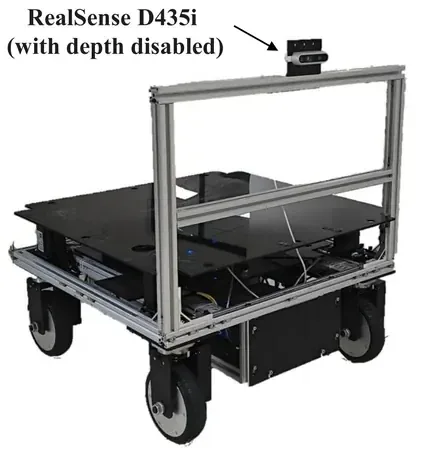
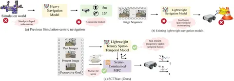
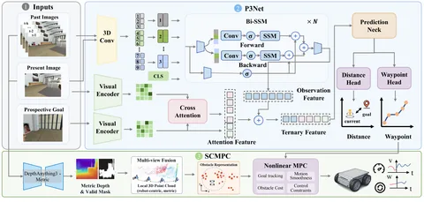
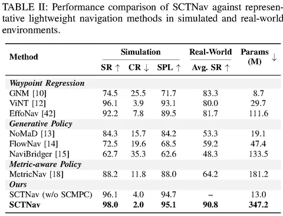
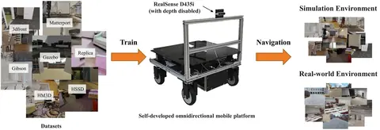
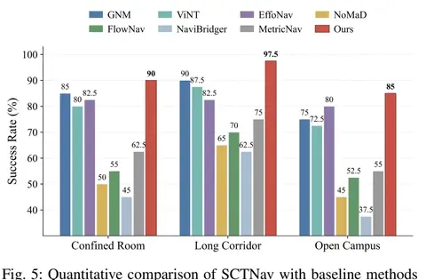

视觉导航Visual navigation
SCTNav：单目视觉导航系统SCTNav: Monocular Visual Navigation
面向室内外图像目标导航，通过过去、当前与目标图像预测路点，并以单目场景几何约束 MPC；三类真实场景平均成功率为90.8%。For indoor and outdoor image-goal navigation, past, current, and goal images predict waypoints while monocular scene geometry constrains MPC; average success is 90.8% across three real settings.
- 导航输入Inputs
- 历史观测、当前图像与目标图像Past observations, current image, and goal image
项目背景Background
图像目标导航通过目标照片指定机器人应到达的位置。项目面向低成本单目平台，研究如何在缺少直接几何目标位姿的情况下，将视觉信息转化为可执行且安全的运动。Image-goal navigation specifies a destination using a photograph. The project studies how a low-cost monocular robot can turn visual information into safe motion without an explicit geometric target pose.
目标照片便于用户指定位置，但不会直接给出机器人坐标系中的距离、朝向和可行驶路径。狭窄房间中的遮挡、长走廊中的外观相似与室外光照变化，会同时影响目标识别和局部运动安全。A goal photograph is easy to provide but does not directly specify distance, heading, or a traversable route in robot coordinates. Occlusion in confined rooms, repetitive corridor appearances, and outdoor lighting challenge both goal recognition and safe local motion.
任务说明Task
机器人根据行进中获取的 RGB 画面判断与目标的关系，持续预测航点并控制底盘前进，在室内走廊、障碍场景和室外道路中抵达目标图像对应的位置。The robot relates incoming RGB views to the goal image, continually predicts waypoints, and controls its base toward the depicted destination in corridors, obstacle settings, and outdoor routes.
输入为历史 RGB 观测、当前 RGB 图像和目标图像，输出为连续航点与底盘控制。机器人在执行中反复更新视觉判断和局部轨迹，既要向目标推进，也要处理桌椅、墙边和道路障碍带来的空间约束。Past RGB observations, the current RGB image, and a goal image are converted into waypoints and base commands. Visual estimates and local motion are updated throughout execution to make progress while accounting for spatial constraints from furniture, walls, and outdoor obstacles.
设备说明Robot hardware
采用自研全向移动底盘和 RealSense D435i 相机，实验关闭深度通道，仅使用单目 RGB 图像进行视觉推理与场景约束恢复。A self-developed omnidirectional mobile base uses a RealSense D435i with the depth channel disabled. Visual reasoning and scene constraints use monocular RGB images only.

系统和关键技术System and key technologies
系统采用“视觉路点预测—场景约束恢复—运动优化”的分层结构。P3Net 对历史、当前和目标图像进行时空关系建模，预测面向目标的局部路点；SCMPC 将恢复的场景约束引入模型预测控制，生成可由底盘执行的运动指令。The system separates visual waypoint prediction, scene-constraint recovery, and motion optimization. P3Net models temporal and spatial relations among past, current, and goal images to predict local waypoints. SCMPC incorporates scene constraints into predictive control to produce executable base commands.
视觉模块负责判断朝哪里前进，控制模块结合可通行区域和底盘运动约束修正局部轨迹。两者在机器人行进中持续闭环更新，使图像目标理解与障碍环境中的运动执行相互衔接。Visual prediction provides local goal direction, while control adapts the trajectory to traversable space and base-motion constraints. Repeated closed-loop updates connect goal understanding with physical execution.


演示与结果Demonstrations and results
项目页提供室内外实机、走廊导航、方法与对比演示。SCTNav 成功片段和其他方法的失败案例分别标注，用于观察不同场景下的执行行为。The project page provides indoor and outdoor robot tests, corridor navigation, method videos, and comparisons. SCTNav demonstrations and baseline failure cases are labeled separately.
演示来源：SCTNav 项目页 · CC BY-SA 4.0Demonstrations: SCTNav project page · CC BY-SA 4.0
实验与基线对比Experiments and baseline comparisons
训练数据来自七类模拟器或数据集，约含 8.5 万条轨迹和 250 万张 RGB 图像。仿真在未出现在训练集的四种 Gazebo 布局上评估，包含 102 组固定起终点。完整系统获得 98.0% 成功率、2.0% 碰撞率和 95.1% SPL。Training uses approximately 85,000 trajectories and 2.5 million RGB images from seven simulators or datasets. Simulation evaluation uses 102 fixed start–goal pairs across four unseen Gazebo layouts. The full system reaches 98.0% success, 2.0% collision rate, and 95.1% SPL.
在三个未见真实环境中直接部署，不进行微调。每个场景包含 10 条轨迹、每条重复 4 次，共 120 次测试。受限房间、长走廊和开放校园成功率分别为 90.0%、97.5% 和 85.0%，平均为 90.8%。The system transfers without fine-tuning to three unseen real-world environments. Each environment has 10 trajectories repeated four times, totaling 120 runs. Success is 90.0% in confined rooms, 97.5% in long corridors, and 85.0% on an open campus, averaging 90.8%.
P3Net 本身为 13.0M 参数，加入场景几何模块后完整系统为 347.2M 参数。系统在 i7-12700F 与 RTX 3050 的机载平台上运行，D435i 仅启用 RGB，推理无需云端。P3Net has 13.0M parameters; the full system, including scene-geometry estimation, has 347.2M. It runs onboard an i7-12700F and RTX 3050 platform with only the RGB stream of a D435i enabled, without cloud inference.
| 评估Evaluation | 成功率Success rate | 碰撞率Collision rate | SPLSPL |
|---|---|---|---|
| 仿真，102组起终点Simulation, 102 start–goal pairs | 98.0%98.0% | 2.0%2.0% | 95.1%95.1% |
| 真实三场景平均，120次Real-world mean, 120 runs | 90.8%90.8% | —— | —— |


